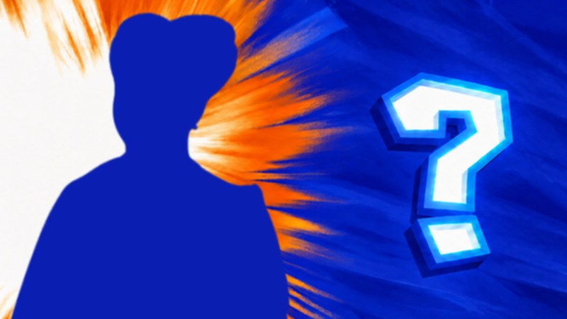
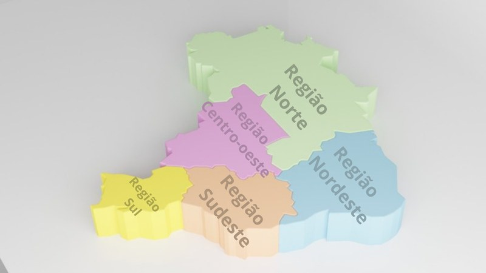
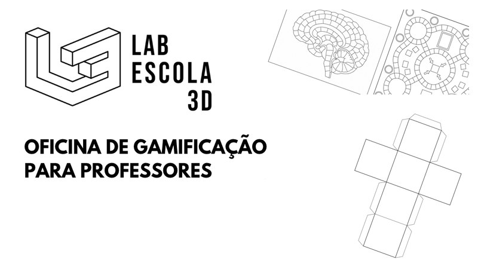
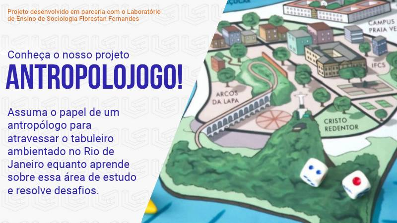

Materiais para usar na sua aula
Jogos, formações e manuais criados com professoras e professores da rede pública do Rio. Gratuitos, para baixar, imprimir e adaptar à sua turma.
Ver o catálogoEm destaque

Investigadoras do conhecimento
Um jogo de pistas para a turma descobrir as grandes mulheres brasileiras da ciência, da arte, da política e do esporte.

Expedição Sonora
Uma viagem pelo Brasil de ouvido: a turma escuta uma música e descobre de que região ela vem.

Oficina de Gamificação
Uma oficina para professores vivenciarem dois jogos do LE3D e adaptarem a mecânica para a própria turma.

Antropolojogo
Um jogo de tabuleiro de ciências sociais, criado com o LabES/UFRJ para a Olimpíada de Sociologia do Rio.
O que é o Lab Escola 3D
Um projeto de extensão da UFRJ que leva a cultura maker, o design e as tecnologias digitais para a escola pública. Trabalhamos junto com o professor, a partir das necessidades reais da sala de aula, e devolvemos tudo o que criamos como material aberto.
Como fazemos
Vamos à escola, ouvimos os professores e conhecemos o colaboratório.
Criamos juntos jogos, oficinas e roteiros, testados com as turmas.
Publicamos tudo aqui, para qualquer professora baixar e adaptar.